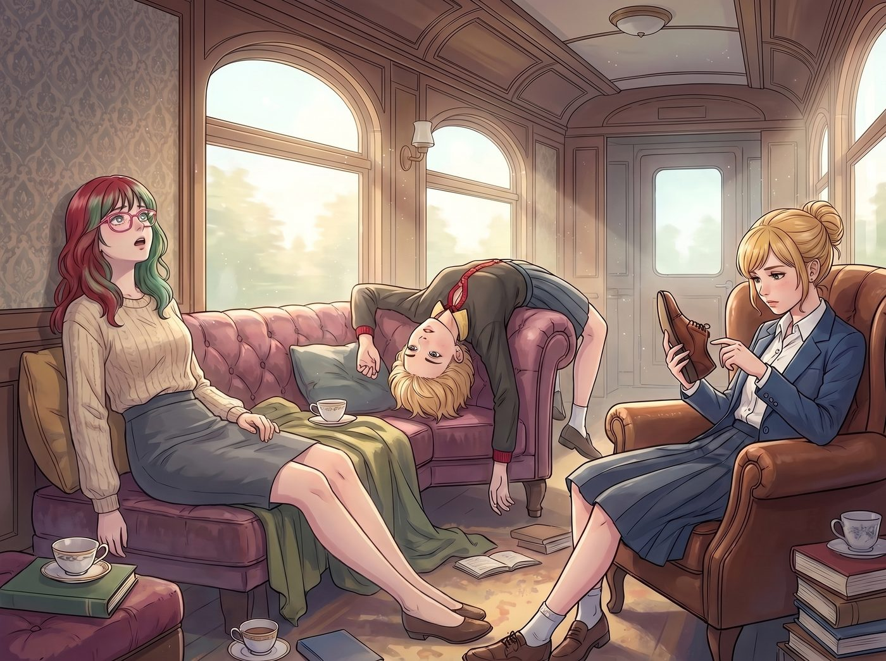

諸葛錦囊

星期二的下午，二號車廂徹底淪陷為一座賽博精神病院。
三針疫苗加強劑的免疫反應，像一場無差別的認知降維打擊，精準地摧毀了車廂裡三位高階腦力勞動者的額葉皮層。俗稱：重度腦霧。
只有因為拒絕打針而毫髮無損的 Chloe，以及只打了一針還在觀望的 Max，清醒地目睹了這場令人毛骨悚然的智力大崩塌。
一、賽博精神病院
廚房區，Victoria 穿著高定的真絲睡袍，正死死抓著那台頂級烤箱的把手，手裡拿著一張黑色的百夫長卡，瘋狂地往散熱孔裡塞。
「為什麼這台ATM不給我吐魚子醬？！」Victoria 的眼神渙散，平時那種高高在上的名媛氣場蕩然無存，取而代之的是一種清澈的愚蠢，「你知道我爸爸是誰嗎？信不信我把你們這家破銀行買下來！」
沙發上，Kate 更是陷入了某種極端的心智退化。這位平時溫柔的天使，此刻正把一台嗡嗡作響的掃地機器人抱在懷裡，輕柔地拍著它的外殼。
「可憐的小迷途羔羊……」Kate 眼眶紅紅的，對著掃地機器人唱起了讚美詩，「不要害怕這世間的灰塵，主會為你洗淨一切罪孽……來，張嘴，吃一口無麩質的電池。」
但最讓 Chloe 感到恐懼的，是坐在工作站前的 Lily。作為這個營地的行政大腦，Lily 的腦霧並沒有讓她變成白癡，而是讓她的邏輯陷入了某種極度扭曲的死循環。
她正對著空氣瘋狂地敲擊著一個根本沒有開機的計算器，嘴裡念念有詞：「營地外的那隻松鼠……牠已經連續三個冬天沒有申報堅果儲備的資本利得稅了。這是嚴重的偷漏稅行為。我必須起草一份四十頁的審計報告，請求無人機對其棲息地進行武裝催繳……」
「Max……」Chloe 嚥了一口唾沫，手裡拿著防身用的扳手，「實習生已經開始對碳基野生動物徵稅了。我們是不是該棄車逃跑了？」
二、紅色文件夾
Max 舉著相機，手足無措地站在原地。就在這手忙腳亂之際，她的眼角餘光瞥見了 Lily 井井有條的辦公桌上，放著一個與周圍環境格格不入的鮮紅色文件夾。
Max 走過去，翻開那個蓋著最高機密偽造印章的紅色文件夾。首頁上用端正的字體寫著一行大字：《協議404：高階行政人員認知降維應急處置預案》。
「Chloe！快過來！」Max 像抓住了救命稻草一樣大喊。
Chloe 湊過來，兩人看著文件夾裡那些被標註得清清楚楚、猶如諸葛亮錦囊一般的應急指令，背後同時升起了一股涼意。Lily 竟然連自己大腦當機的情況都預判到了，並且寫下了完美的無痛鎮壓方案。
三、三個錦囊
錦囊一，針對目標A（Victoria Chase）的處置方案。症狀表現：當目標出現嚴重的階級認知障礙，試圖用金錢賄賂非金融基礎設施時。處置操作：切勿與其爭辯資產流動性。請從茶几下方的二號抽屜取出過期時尚雜誌一本，並遞上一杯加入兩片黃瓜的白開水。話術指導：「女士，您的私人水療療程已經準備就緒，請在等候區審閱本季高定型錄。」
Chloe 照做了。她端著那杯寒酸的黃瓜水，硬著頭皮走到還在跟烤箱搏鬥的 Victoria 面前，念出了那段羞恥的台詞。
奇蹟發生了。Victoria 渙散的眼神瞬間聚焦在了那本破舊的雜誌上。她高傲地冷哼了一聲，接過黃瓜水，像隻被順了毛的波斯貓一樣，優雅地走到沙發角落坐下，開始對著雜誌上一件外套指指點點，徹底忘記了烤箱ATM的事。
錦囊二，針對目標B（Kate Marsh）的處置方案。症狀表現：當目標的同理心溢出，開始對無機物進行宗教勸導或心理干預時。處置操作：強行奪走無機物會導致其產生強烈的護崽應激反應。請從工具箱取出五號工業毛線團。話術指導：「Kate，這隻患有重度創傷壓力症候群的綿羊剛剛在暴風雨中迷路了，只有您溫柔的雙手能解開它打結的羊毛。」
Max 拿著那團亂七八糟的工業毛線走到 Kate 身邊，輕聲說出了話術。
「噢！可憐的孩子！」Kate 果然倒抽了一口涼氣，立刻拋棄了掃地機器人，將那團毛線緊緊抱在懷裡，開始滿臉慈悲地、一點一點地梳理著那些死結。營地再次恢復了寧靜。
錦囊三，針對目標C（本人／Lily）的處置方案。症狀表現：當本人開始試圖將聯邦稅法或合規條例應用於自然界動植物、天氣現象或量子力學時。處置操作，極度危險，請嚴格執行：絕對不要試圖用物理手段阻止我，這會觸發我的防禦性行政絞殺本能。請從三號文件櫃取出藍色的《無效數據虛擬帳本》。話術指導：「長官，國稅局剛發來加急指令，要求您立刻用羅馬數字手動重新驗算圓周率至小數點後三百位，以此作為我們營地免稅的物理學依據。」
四、荒謬的數學黑洞
Chloe 嚥了一口唾沫，拿出那個厚厚的藍色空筆記本，走到還在對著空氣算帳的 Lily 面前，用極其嚴肅的語氣下達了指令。
Lily 敲擊空氣的手指猛地停住了。
她緩緩抬起頭，那雙因為腦霧而顯得有些呆滯的眼睛裡，突然爆發出一陣狂熱的、屬於黑魔法師的鬥志。「愚蠢的國稅局政客……」Lily 推了推圓框眼鏡，嘴角勾起一抹令人毛骨悚然的冷笑，「他們以為區區羅馬數字就能阻擋我進行資產庇護嗎？太天真了。」
Lily 一把抓過那個藍色筆記本，拔出鋼筆，開始在白紙上瘋狂地書寫著滿篇的羅馬數字，完全沉浸在了這個永遠沒有盡頭的、荒謬的數學黑洞裡。
不到十分鐘，三場足以毀滅車廂的認知危機，在不升級任何對抗的前提下，被三個極其可笑的注意力轉移陷阱完美化解。
五、合法瘋下去的劇本
Chloe 擦了擦額頭的冷汗，看著坐在角落裡看破雜誌的 Victoria、對著毛線團唱聖歌的 Kate，以及正在用羅馬數字狂算圓周率的 Lily。
這是一幅極度滑稽、卻又令人感到深深敬畏的畫面。
「Max……」Chloe 虛弱地靠在操作台上，「妳覺不覺得，這實習生最可怕的地方，不是她能把五角大廈玩弄於股掌之間……」
Max 點了點頭，默默地將那個紅色的文件夾收好。「而是她就算大腦壞掉了，也能在壞掉之前，寫好一份把我們當成NPC來執行指令的腳本，好讓她自己能合法地瘋下去。」